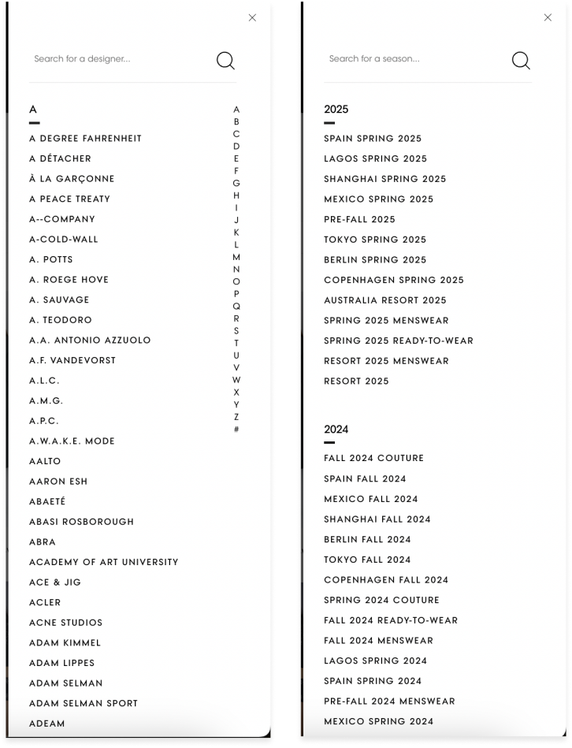
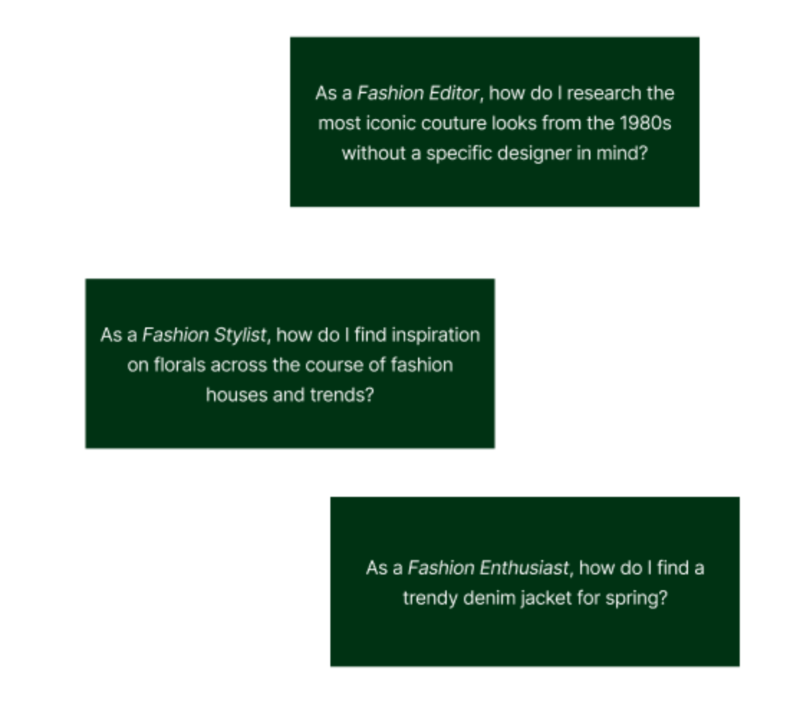
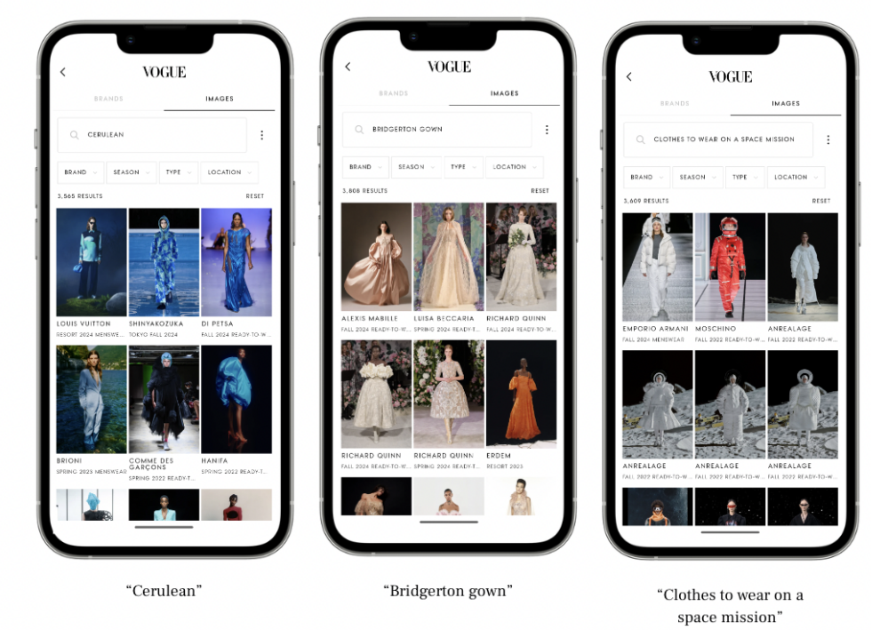
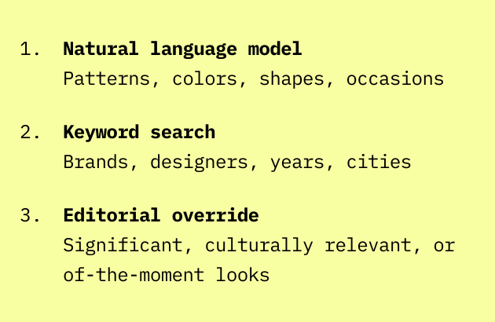
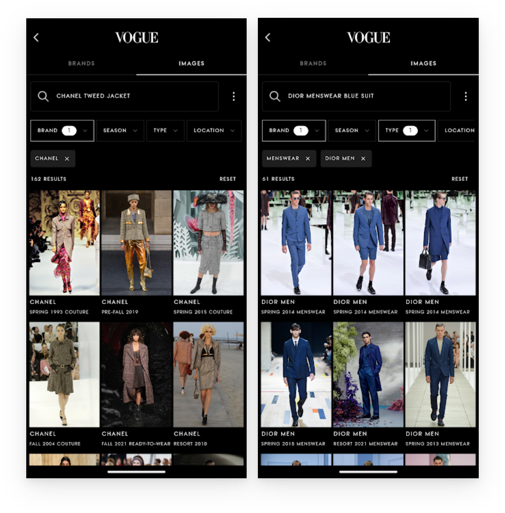
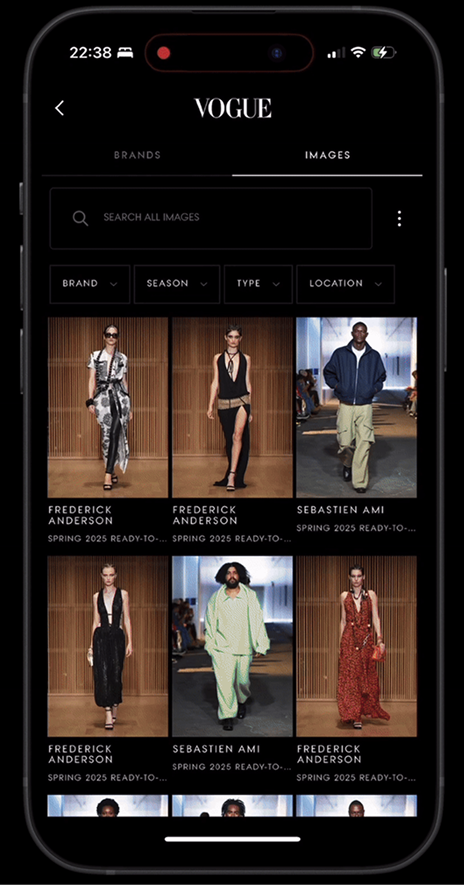
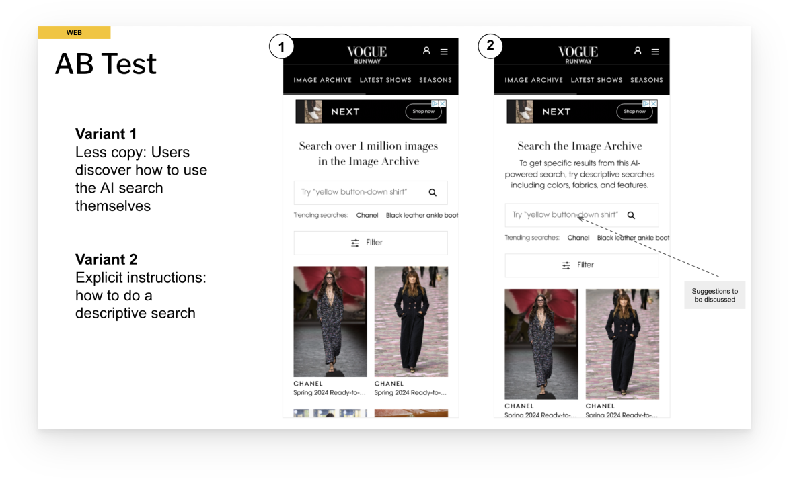
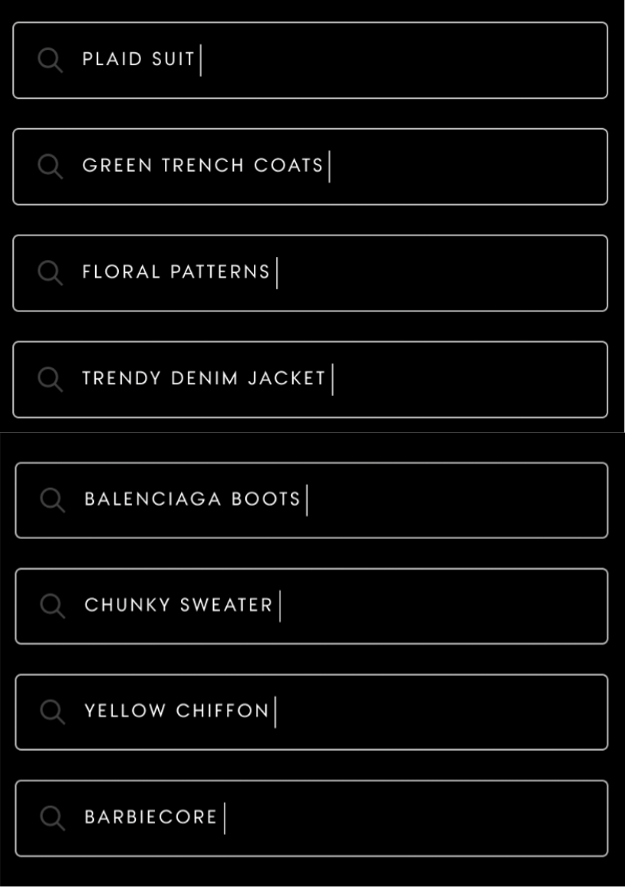

Case Study — Vogue / Condé Nast
Vogue Open Text Search
A technically-minded project that demonstrates the contributions of Content Design when there isn't much text on the screen. I owned the content design contributions for this project, as well as its handover to marketing.
Background
Vogue owns 1.2 million images from runway shows — a library spanning across the globe and the history of fashion. The everyday Vogue reader didn't have easy access to this vast archive. Plus, fashion designers and students needed better tools in order to see our IP as a valuable resource.
Enter a collaboration with our Machine Learning team.

Challenge
The only way to sort through the repository was via two filters: season or designer. But with Machine Learning at our disposal, we could build a model that mimicked how readers and fashion professionals searched.
The added challenge: We needed to build a different yet consistent experience for the web and apps.

Approach
We started by understanding the Jobs To Be Done — mapping the distinct ways a Fashion Editor researching couture, a Fashion Stylist exploring trends, and a Fashion Enthusiast browsing casually would each approach search differently.
From there, we understood the technology at our disposal and shaped the content design around three distinct search modes:
- Natural language model — patterns, colors, shapes, occasions
- Keyword search — brands, designers, years, cities
- Editorial override — significant, culturally relevant, or of-the-moment looks

Design Rationale
App
- Worked with the model creators to ensure we came as close as possible to intuitive human queries
- Retained keyword search as a quick and easy tool that also helps users understand "open text" capabilities
- Partnered with design on visual cues that differentiate word types
- Educated users during use in lieu of lengthy onboarding
- Helped Editorial understand the technology by creating an internal tool for refining the model




Web
- Focused on discovery as the end-goal by guiding user searches toward open-ended terms
- Worked with Legal on disclosures needed for AI
- Named the thing!



Outcome
App
Web
